第二部分 线性表
数据结构笔记
你将遇见以下问题
1. 一元多项式如何存储?哪种方式更好?两个多项式相加相乘如何操作?
2. 二元多项式如何存储
3. 矩阵该选择用二维数组存储吗?
4. 堆栈经典问题：如何计算算术表达式的值?
5. 如何解决队列中把数组用尽(而实际上数组未满)的问题?
- 线性表(liner List)
- 由同类型数据元素构成有序序列的线性结构
链表
- 链表(List)
- 链表包括
值与指针域
struct node{ElementType e;//值node* next;//指针域};
这样一个可以看作是，链表的一个节点。
一个链表一般会有一个表头（其指针域指向的是链表的第一个元素），也可以省略，最后一个元素的指针域设为空 NULL
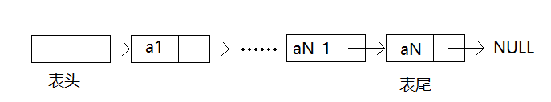
链表就是由这样一个个节点链接起来形成的。
链表，一般有以下操作
一种实现
以下是链表的一种实现的方式
1.表中无元素即为空表，所以只需要一个表头
node* new_list(){node*p=new node;p->e=0;//此项可不必初始化，也可初始化为表长，下不作为表长看p->next=NULL;return p;}
2.返回第k个元素值
ElementType at(int k){//k从0开始计int count = 0;node*p = head -> next;//head 表示指向表头的指针,*p这里即为第一个元素while(p){//p不为NULL时为真,即到表尾跳出if(count == k)return p->e;count++;p=p->next;}return NULL;//实际中应返回一个不存在的值，这里用NULL代替}
3.插入新元素
node* insert(ElementType x,int i){//i从0开始计int count = 0;node* p = head;while(p){if(count==i){node* newnode = new node;if(newnode!=NULL){newnode->e = x;newnode->next = p->next;// ①p->next = newnode;// ②return newnode;//返回新值的位置}else{//如果申请内存失败throw 0;//抛出一个错误}}count++;p=p->next;}return NULL;//插入失败}

4.查找x
node* find(ElementType x){node* p = head->next;while(p){if(p->e==x)return p;p=p->next;}return NULL;}
5.删除第i个元素
bool delete(int i){node* p = head;int count = 0;while(p->next){//因为要删除p后面一个元素，所以要判断那个元素存不存在,又head比如不为NULL，所以这里没有问题if(count==i){node* tmp = p->next;p->next = p->next->next;delete tmp;return true;}count++;p=p->next;}return false;}
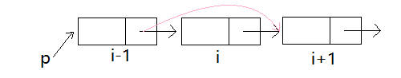
6.返回长度
int length(){node* p=head->next;int count=0;while(p){count++;p=p->next;}return count;}
7.在末尾加一个元素x
void push_back(ElementType x){node* p = head;while(p->next)p=p->next;p->next=new node;：p->next->e=x;p->next->next=NULL;}
你还可以定义其他操作如 push_front, pop_back,pop_front 等
链表与数组比较
| 数组 | 链表 | |
|---|---|---|
| 存储方式 | 连续 | 不连续 |
| 占用空间 | n*sizeof(ElementType) |
(n+1)*(sizeof(ElementType))+sizeof(node*) |
| 优势 | 方便,访问/查找 | 灵活，插入/删除 |
| 访问/查找 | O(1) | O(n) |
| 插入 | O(n) | O(1) |
| 删除 | O(n) | O(1) |
链表的主要优势在于插入删除操作，这里写O(1)是指在找到这个位置后只需要O(1),然而找的时间仍是O(n),但这不妨碍链表的优势，因为当ElementType是一个很大的struct的时候，移动、赋值操作花费将巨大，换言之查找的时间复杂度 n 前的系数 会比 插入/删除 n 前的系数小得多，从而加快了速度。
链表的灵活常常体现在节省空间，尽管同样存储n个元素，链表需要更多空间，但是实际中数组会不得不存储一些无意义的数据(比如0)或者把位置空在那里，这在链表中是不会发生的。
实例：一元多项式
存储
分析可知 一个一元多项式 关键数据 有
方法1：数组，数组下标表示指数i 对应位置存储
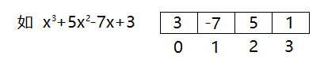
方法2：结构数组，把{,i}作为整体存入数组
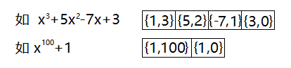
方法3：链表
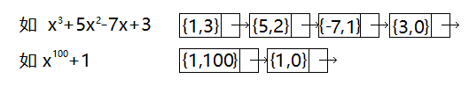
三个方法各有优势，方法1方便简单，如果从1-n各项系数为0的较少则优势体现得比较大，但是如果n很大，1-n各项0项很多，就不怎么好了，另外两种都解决了这个问题，结构数组的话同时兼顾了比较方便和省空间，但是当运算多次后则不一定能够很好地去节省空间了。链表保证了其存储的数据没有一个多余的。
后两种显然乱序和有序都不改变其代表的多项式，但是为了下面的加法和乘法，我们规定这里是有序存储的，且按指数大到小排列。
加法
首先看两个多项式如何相加。
例：
我们其实不仅要把多项式相加，而且答案输出的时候，也要按指数从大到小来排列好。
我们每次都是比较两个多项式最前面一项的指数，把大的一个放进答案中，如果相等则相加放入答案中，过程如下
| 第一次 | 第二次 | 第三次 | 第四次 | 第五次 | 第六次 |
|---|---|---|---|---|---|
下面以链表的存储方式为例
Poly operator+(Poly P1,Poly P2){//假设 Poly <=> node*node* p1=P1->next,*p2 = P2->next;node* answer = new node;answer->next=NULL;node* pa= answer;while(p1&p2){//有一个读完就退出if(p1->i > p2->i){pa->next = new node;pa = pa->next;pa -> ai = p1 -> ai;pa -> i = p1 -> i;pa -> next = NULL;p1 = p1 -> next;}else if(p1->i < p2->i){pa->next = new node;pa = pa->next;pa -> ai = p2 -> ai;pa -> i = p2 -> i;pa -> next = NULL;p2 = p2 -> next;}else{pa->next = new node;pa = pa->next;pa -> ai = p1 -> ai + p2 -> ai;//实际上可以先做这个判断是不是0，如果是零就不必存进去了pa -> i = p1 -> i;pa -> next = NULL;p1 = p1 -> next;p2 = p2 -> next;}}while(p1){//把p1剩下的补上pa->next = new node;pa = pa->next;pa -> ai = p1 -> ai;pa -> i = p1 -> i;pa -> next = NULL;p1 = p1 -> next;}while(p2){//把p2剩下的补上pa->next = new node;pa = pa->next;pa -> ai = p2 -> ai;pa -> i = p2 -> i;pa -> next = NULL;p2 = p2 -> next;}return answer;}
之所以特地用链表写，为了提醒33-48行不能偷懒写
if(p1==NULL)pa=p2;else pa=p1;
这个是错的因为当你之后修改p1 p2值时，answer的值会改变，这是你不愿意见到的。
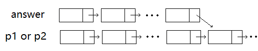
乘法
那么接下来是乘法的问题，有了加法,乘法就很简单了。
利用乘法分配律，把第二个多项式的每一项乘以第一个多项式，然后把答案相加即可。
Poly operator*(Poly A,Poly B){node* p1=A-next,*p2=B->next;node* answer = new node;answer->next=NULL;node*tmpanswer = new node;tmpanswer->next->next=NULL;node* pa=tmpanswer;for(int i=0;i<B.length();i++){//这里仅表达B的长度，具体代码中不一定可以这么写pa->next=new node;pa=pa->next;pa->next=NULL;}for(;p1;p1=p1->next){if(p1->ai==0)continue;p2=B->next;pa=tmpanswer->next;for(;p2;p2=p2->next,pa=pa->next){pa->ai=p1->ai*p2->ai;pa->i=p1->i+p2->i;}answer+=tmpanswer;}return answer;}
二元多项式存储
- 广义表(Generalized List)
- 广义表是线性表的推广
广义表存储的元素不再是单元素，也有可能是另一个广义表
如 这样一个二元多项式可整理成
可视为关于 x 的一元多项式 均为系数
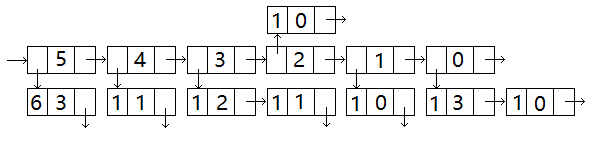
像上面这样的一种链表叫做多重链表
多重链表，双向链表，循环链表，十字链表
- 多重链表
- 一个结点中含多个指向下一个结点的指针域，即一个结点的下一个结点可能有多个。
如上一个链表中，第一个节点 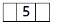 对应的下一个结点有 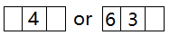
- 双向链表
- 一个结点中既有指向下一个结点的指针域，也有指向上一个结点的指针域。
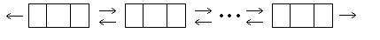
双向链表出现主要是为了方便操作，同样的循环链表也是如此。
- 循环链表
- 最后一个结点的指针域指向第一个结点而不是NULL
实例:矩阵存储
矩阵存储一般是用二维数组存储，但是当一个矩阵是稀疏矩阵时，用二维数组存储则不合算了。
- 稀疏矩阵
- 当一个矩阵中零元素非常多的时候我们称这个矩阵为稀疏矩阵
那和存储一元多项式类似，当我们用链表存储以优化存储效率
这里介绍一种十字矩阵
一个结点的数据域包括 行坐标Row 列坐标Col 值Value
指针域包括 行指针 列指针
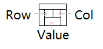
我们看矩阵便以以下方式存储
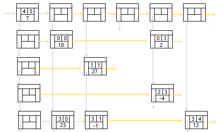
这里第一个节点存储了矩阵大小和非零值个数
第一行/列均是头节点剩下的才是存储的数据
堆栈(stack)
堆栈是一种非常简单的数据结构，但是功能强大
堆栈(stack),简称 栈
特点:先进后出 FILO
栈有两个非常典型的2个问题
1. 括号匹配问题
2. 计算算术表达式
我们这里详细介绍 计算算术表达式 问题
堆栈的一些应用
最后写了一下数组的实现方式
计算算术表达式
我们首先把这个问题形式化为
输入:输入一个算法表达式，可能包含以下运算符(+,-,*,/,())
输出:该算术表达式的值
样例：
input: 5+8*3-9/(2+5*1-3)
output: 26.75
分析可知这些运算符优先级关系 () > *,/ > +,-
同一优先级从左向右算
首先引入下列概念
- 中缀表达式
- 把一个二元运算符放在两个被操作数中间的表达式，如 5+3
- 前缀表达式
- 把一个二元运算符放在两个被操作数前的表达式，如 + 5 3
- 后缀表达式
- 把一个二元运算符放在两个被操作数后的表达式，如 5 3 +
三种表达式可以互相转化
中缀表达式: 5 + 8 * 3 - 9 / ( 2 + 5 * 1 - 3 )
前缀表达式: - + 5 * 8 3 / 9 ( - + 2 * 5 1 3 )
后缀表达式: 5 8 3 * + 9 2 5 1 * + 3 - / -
注意在后缀表达式中 5 8 3 * + 中不写 8 3 * 5 + 因为有加法交换律，所以值一样，但是一个对应 5 + 8 * 3 另一个对应 8 * 3 + 5 所以这里这么写。
我们选用后缀表达式计算值，因为后缀表达式运算符顺序和计算顺序一致,且已经处理掉了括号。只要一个循环就能完成计算值的任务。
所以，我们计算一个 算术表达式分两步
1. 把中缀表达式转化成后缀表达式
2. 计算后缀表达式值
中缀表达式转化为后缀表达式
计算方案:
下面以样例为例
| 中缀表达式 | 5 | + | 8 | * | 3 | - | 9 | / | ( | 2 | + | 5 | * | 1 | - | 3 | ) |
|---|---|---|---|---|---|---|---|---|---|---|---|---|---|---|---|---|---|
| i | 0 | 1 | 2 | 3 | 4 | 5 | 6 | 7 | 8 | 9 | 10 | 11 | 12 | 13 | 14 | 15 | 16 |
| i | 栈内情况 | 输出 |
|---|---|---|
| 0 | 5 | |
| 1 | + | 5 |
| 2 | + | 5 8 |
| 3 | +* | 5 8 |
| 4 | +* | 5 8 3 |
| 5 | - | 5 8 3 * + |
| 6 | - | 5 8 3 * + 9 |
| 7 | -/ | 5 8 3 * + 9 |
| 8 | -/( | 5 8 3 * + 9 |
| 9 | -/( | 5 8 3 * + 9 2 |
| 10 | -/(+ | 5 8 3 * + 9 2 |
| 11 | -/(+ | 5 8 3 * + 9 2 5 |
| 12 | -/(+* | 5 8 3 * + 9 2 5 |
| 13 | -/(+* | 5 8 3 * + 9 2 5 1 |
| 14 | -/(- | 5 8 3 * + 9 2 5 1 * + |
| 15 | -/(- | 5 8 3 * + 9 2 5 1 * + 3 |
| 16 | -/ | 5 8 3 * + 9 2 5 1 * + 3 - |
| 5 8 3 * + 9 2 5 1 * + 3 - / - |
计算后缀表达式值
计算方案：
遇见数字，压入栈；遇见操作符取出两个数字作运算，把答案压入栈中
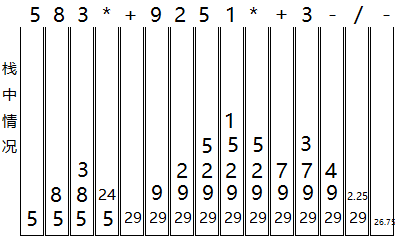
最后栈中只剩下一个元素，即为答案。
其他计算表达式的方法:运算树
仍以 5 + 8 * 3 - 9 / ( 2 + 5 * 1 - 3 ) 为例
可以转化称运算树
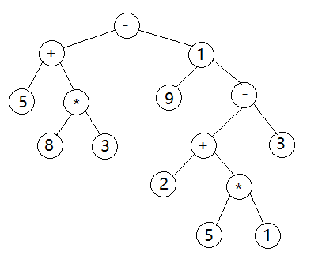
计算方法:两子树的值做根节点运算
先序遍历输出结果即为前缀表达式
中序遍历输出结果即为中缀表达式（但是需要为子树加括号）
后序遍历输出结果即为后缀表达式
此部分属于树的内容，此处只是提一下。
栈数组简单实现
class Stack{//以 int 为例int a[100];//要简单实现，我们就去定义一个足够大的数组int p;public:Stack(){p=0;}//把p作为栈的大小，那么p恒指向最后一个元素的后面一个void push(int x){a[p]=x;p++}//因为足够大所以不必做溢出判断void pop(){if(!empty())p--;}int top(){if(!empty())return a[p-1];}bool empty(){return !p;}int size(){return p;}}
队列(queue)
队列(queue)
特点:先进先出 FIFO
队列的实现
数组实现
class queue{//同前面stack一样int a[100];int pstart,pend;public:queue(){pstart=-1;pend=0;}void push(int x){a[pend]=x;pend++;}void pop(){pstart++;}int top(){if(!empty())return a[pstart];}bool empty(){return !(pend-pstart-1);}int size(){return pend-pstart-1;}}
| 操作 | 队列情况(maxsize=5) |
|---|---|
| push(5) | 5 |
| push(6) | 5 6 |
| pop() | 6 |
| push(7) | 6 7 |
| pop() | 7 |
| pop() | |
| push(8) | 8 |
| push(9) | 8 9 |
| push(5) | 8 9 |
在最后一次push时数组就用尽了，而却没存满，为此我们设计了一种循环队列，这类似于循环链表。
循环队列
对于循环队列同样的操作
| 操作 | 队列情况(maxsize=5) |
|---|---|
| push(5) | 5 |
| push(6) | 5 6 |
| pop() | 6 |
| push(7) | 6 7 |
| pop() | 7 |
| pop() | |
| push(8) | 8 |
| push(9) | 8 9 |
| push(5) | 5 8 9 |
这样就不会有溢出问题了，要实现这样一个东西，只需要在原本的基础上把 pend 和 pstart 每次 ++ 时，去 %maxsize
注意循环队列中当数组大小为n时，能存储n-1个元素，否则将无法判断队列满还是空(当强行存n个元素时，这两个判断条件将一致)
用两个栈实现一个队列
这个其实是 算法(第四版) 的一道题目
我们这里用到的只有两个栈，设为 s1 和 s2
void push(int x){s1.push(x);}void pop(){if(s2.empty()){while(!s1.empty()){s2.push(s1.top());s1.pop();}}if(s2.empty());//errors2.pop();}int front(){if(s2.empty()){while(!s1.empty()){s2.push(s1.top());s1.pop();}}if(s2.empty());//errorreturn s2.top();}bool empty(){return s1.empty()&&s2.empty();}int size(){return s1.size()+s2.size();}
以上所有操作代价均为O(1)
这个也只是提一下，这个本身就属于比较难的题